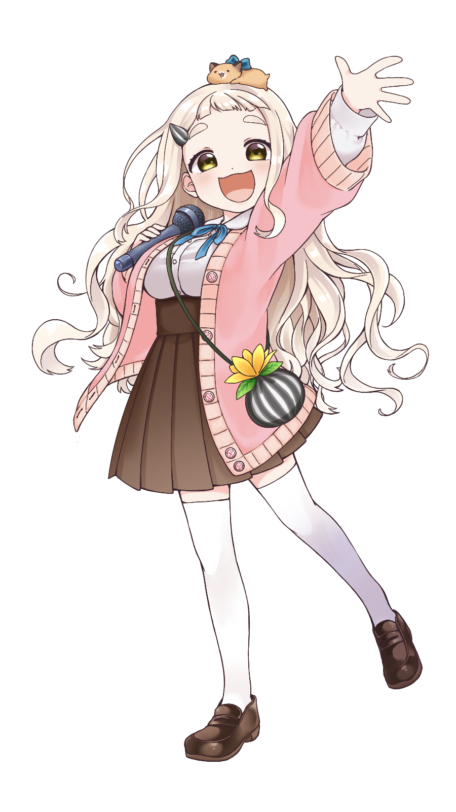

プロフィール
町田ちま（Chima Machita）
16歳の高校一年生。訛っているのを恥ずかしがっている上京したての女の子。歌手になることが夢で日々歌の練習に励んでいる。夢の実現に少しでも繋がればと思い配信を始めた。一人暮らしは寂しいので、ゴンザレスという名前のハムスターと一緒に暮らしている。
( にじさんじ公式サイト ライバー紹介より引用)
- 年齢：16歳
- 誕生日：8月5日
- 好きなもの：ハムスター
主要な活動プラットフォーム


16歳の高校一年生。訛っているのを恥ずかしがっている上京したての女の子。歌手になることが夢で日々歌の練習に励んでいる。夢の実現に少しでも繋がればと思い配信を始めた。一人暮らしは寂しいので、ゴンザレスという名前のハムスターと一緒に暮らしている。
( にじさんじ公式サイト ライバー紹介より引用)